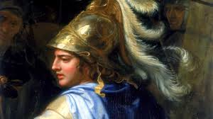

Quem foi Alexandre, o Grande?
Alexandre III da Macedônia, mais conhecido como Alexandre, o Grande, foi um dos maiores conquistadores da história. Nascido em 356 a.C., ele foi rei da Macedônia e, aos 20 anos, iniciou uma série de conquistas que expandiram seu império da Grécia até o Egito e a Índia, criando o maior império do mundo antigo.
Ensinamentos e Filosofia de Alexandre
Embora não tenha deixado escritos, o legado filosófico e de liderança de Alexandre é imenso. Ele foi influenciado por Aristóteles, que o ensinou filosofia e ciências, e incorporou muitos conceitos gregos em seus métodos de governo.
- Respeito pela cultura e diversidade: Ao conquistar diversos povos, Alexandre foi notável por adotar e promover as culturas locais, como a persa, em seu império.
- Coragem e liderança: Alexandre demonstrou uma coragem excepcional nas batalhas e era conhecido por estar na linha de frente ao lado de seus soldados, o que lhe conferiu uma enorme lealdade.
O Legado de Alexandre, o Grande
O legado de Alexandre, o Grande, está na formação de um império unificado culturalmente e politicamente, que espalhou o helenismo (cultura grega) por grande parte do mundo conhecido. Sua habilidade de integração de culturas e a promoção de cidades como Alexandria ajudaram a fundar uma nova era de trocas culturais entre o Oriente e o Ocidente.